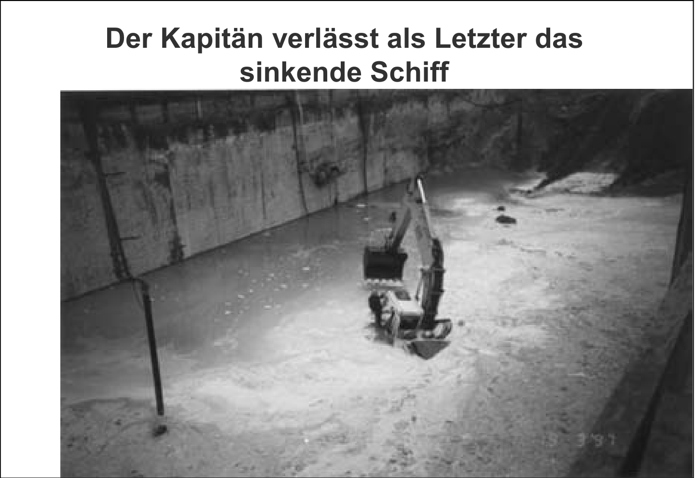
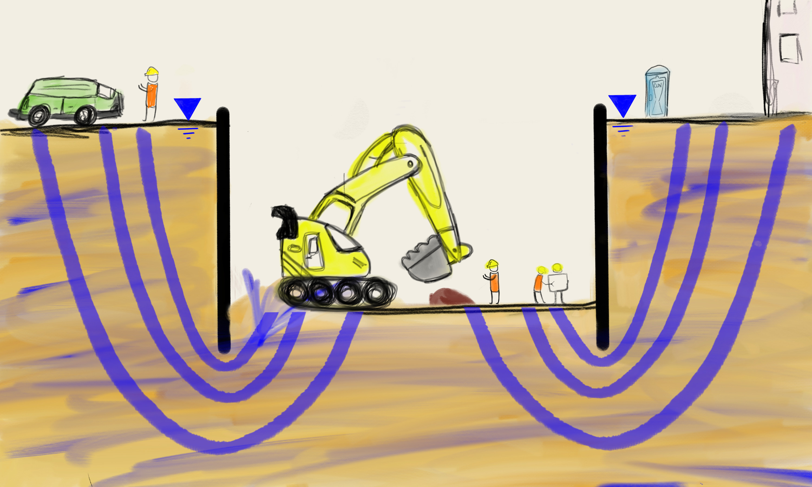
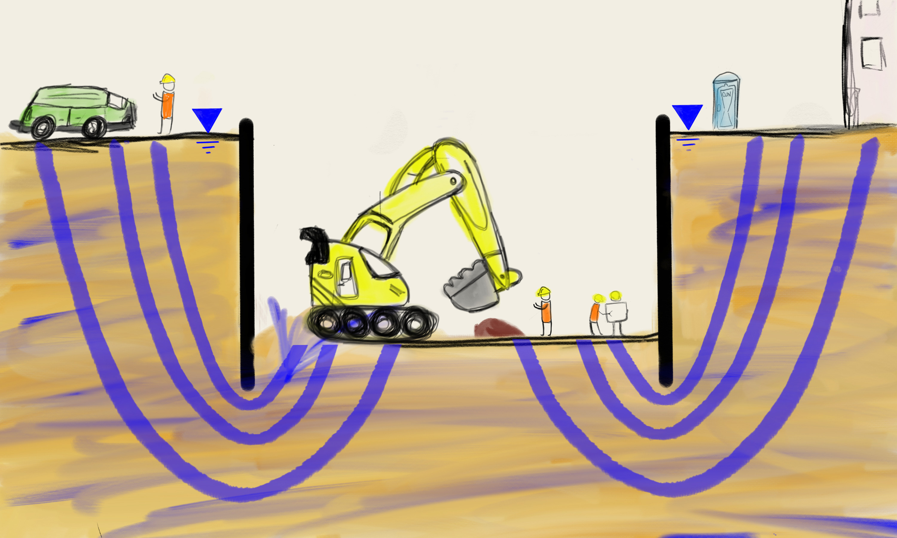

Hydraulischer Grundbruch
Modul: GrundbauStudiengang: B.Sc. Bauingenieurwesen
Max Wiebicke
Stand: 3. November 2023
Was könnte hier passiert sein?
Bilder aus Schwarz (2007)

Was könnte für den Wassereinbruch verantwortlich gewesen sein?
Antworten: 0
Was könnte für den Wassereinbruch verantwortlich gewesen sein?
Hydraulischer Grundbruch
 

Modellversuch
Video aus der Bachelorarbeit (TU Dresden) - Hagedorn (2019)
Modellversuch - Details
Ergebnisse as der Diplomarbeit (TU Dresden) - Nöller (2019)
Betrag der Verschiebung [1]
Wiederholung: Strömung im Boden
- Bestimmung der Potentialverteilung aus der Laplace'schen DGL \[ \frac{\partial^2 h_r}{\partial x^2} + \frac{\partial^2 h_r}{\partial z^2} = 0 \]
- zeichnerische Lösung
- analytische Näherungsverfahren
- FDM, FEM[1]
- hydraulische Höhe aus dem Netz \[ h_r = h_0 \pm \frac{\Delta h}{n_{pot}} \cdot n_i \]
Versagenskörper
Kräfte am Versagenskörper
- stabilisierende Gewichtskraft \[ G' = \gamma' \cdot t \cdot \frac{t}{2} \]
- destabilisierende Strömungskraft \[\begin{aligned} f_{s} &= i \cdot \gamma_w \\ i &= \frac{h_{r,1} + h_{r,2}}{2} \frac{1}{t} \\ S &= f_s \cdot t \cdot \frac{t}{2} \end{aligned}\]
- kein Ansatz von Reibungskräften
Nachweis nach EC-7 und DIN1054
- EC7-1 (10.3) erlaubt den Nachweis über
- totale Spannungen vs Porenwasserdrücke
- Strömungskräfte vs Gewichtskräfte (DIN1054) \[ S_{dst,d} \le G_{stb,d}' \]
- $S_{dst,d}$ ... destabilisierende Strömungskraft
- $G_{stb,d}'$ ... stabilisierende Gewichtskraft
- kein Ansatz von Reibungskräften
Teilsicherheitsbeiwerte nach DIN1054
Teilsicherheitsbeiwerte nach DIN1054
- günstiger Baugrund
- Kiese, mind. mitteldicht gelagerte Sande, mind. steifer bindiger Boden
- ungünstiger Baugrund
- locker gelagerte Sande, Feinsand, Schluff und weicher bindiger Boden
Näherungsverfahren
- Näherungsformel nach Brinch-Hansen für Druckhöhe am Wandfuß (EAU, E115) \[ h_r = \frac{h_{wu} \sqrt{h_{so}} + h_{wo} \sqrt{t}}{\sqrt{h_{so}} + \sqrt{t}} - h_{wu} \]
- Nachweis am Stromfaden möglich (Davidenkoff, 1970) \[ \gamma_w \cdot i = \gamma_w \frac{h_r}{t} \le \gamma_k' \]
Ein Beispiel
Beispiel aus Ziegler (2012)
$\gamma' = 11~\text{kN/m}^3,~ \gamma_w = 10~\text{kN/m}^3,~ t=5~\text{m},~ \gamma_H=1,45,~ \gamma_{G,stb}=0,95$
[1] Potentialnetz aus FEM Simulation
Wie hoch ist der Ausnutzungsgrad für den Terzaghi-Bruchkörper?
Antworten: 0
Wie hoch ist der Ausnutzungsgrad für den Terzaghi-Bruchkörper?
Stromlinie mit Abschätzformel nach Brinch-Hansen
$\gamma' = 11~\text{kN/m}^3,~ \gamma_w = 10~\text{kN/m}^3,~ t=5~\text{m},~ \gamma_H=1,45,~ \gamma_{G,stb}=0,95$
Hydraulischer Gradient
\[\begin{aligned}
h_r & = \frac{h_{wu} \sqrt{h_{so}} + h_{wo} \sqrt{t}}{\sqrt{h_{so}} + \sqrt{t}} - h_{wu}
= \frac{5~\text{m} \sqrt{15~\text{m}} + 15~\text{m} \sqrt{5~\text{m}}}{\sqrt{15~\text{m}} + \sqrt{5~\text{m}}} - 5~\text{m} = 3,66~\text{m} \\
i &= \frac{3,66~\text{m}}{5~\text{m}} = 0,732
\end{aligned} \]
Nachweis
\[\begin{aligned}
S_{dst,d} & = i \cdot \gamma_w \cdot \gamma_H = 0,732 \cdot 10~\text{kN/m$^3$} \cdot 1,45 = 10,61~\text{kN/m}^3 \\
G_{stb,d} & = \gamma_k' \cdot \gamma_{G,stb} = 11~\text{kN/m$^3$} \cdot 0,95 = 10,45~\text{kN/m}^3 \\
\mu & = \frac{S_{dst,d}}{G_{stb,d}} = \frac{10,61~\text{kN/m}^3}{10,45~\text{kN/m}^3} = 1,01 > 1 \quad \rightarrow \text{Nachweis nicht erfüllt!}
\end{aligned} \]
Maßnahmen
Zusammenfassung
- hydraulischer Grundbruch kann bei tiefen Baugruben mit hohem hydraulischen Gefälle maßgebend werden
- spontanes Versagen - schwer aufhaltbar, nachdem es erkannt worden ist
- Nachweisführung
- Terzaghi-Körper
- Näherungsverfahren (Achtung Baugrubengeometrie!)
- Vielfältige Maßnahmen zur Steigerung der Sicherheit gegen hydraulischen Grundbruch möglich
- Präsentation als PDF ausdrucken
Literaturempfehlungen
- Witt, K.~J. (Ed.). (2018). Grundbau-Taschenbuch. Berlin: Ernst & Sohn.
- Ziegler, M. (2012). Geotechnische Nachweise nach EC 7 und DIN 1054: Einführung in Beispielen. John Wiley & Sons.
- Boley, C. (2015). Geotechnische Nachweise und Bemessung nach EC 7 und DIN 1054: Grundlagen und Beispiele. Springer Vieweg.
Referenzen
- DIN 1054:2021-04. Baugrund – Sicherheitsnachweise im Erd- und Grundbau – Ergänzende Regelungen zu DIN EN 1997-1. Stand: April 2021
- Empfehlungen des Arbeitsausschusses „Ufereinfassungen“ Häfen und Wasserstraßen, Deutsche Gesellschaft für Geotechnik, 12. Auflage. 2020
- DIN EN 1997-1:2014-03. Eurocode 7 – Entwurf, Berechnung und Bemessung in der Geotechnik. Stand: März 2014
- Nöller (2019). Modellversuche zum Bodenverhalten beim hydraulischen Grundbruch. Diplomarbeit TU Dresden - Institut für Geotechnik.
- Hagedorn (2019). Modellversuche zur Umströmung von Baugrubenwänden. Bachelorarbeit TU Dresden - Institut für Geotechnik.
- Aulbach, B., & Ziegler, M. (2014). Versagensform und Nachweisformat beim hydraulischen Grundbruch–Plädoyer für den Terzaghi‐Körper. geotechnik, 37(1).
Referenzen
- Wudtke, R. B., & Witt, K. J. (2010). Hydraulischer Grundbruch im bindigen Baugrund: Schadensmechanismen und Nachweisstrategie. Geotechnik-Tag in München - Wechselwirkungen Boden-Wasser-Bauwerk.
- Ziegler, M., et al. (2009). Der Hydraulische Grundbruch–Bemessungsdiagramme zur Ermittlung der erforderlichen Einbindetiefe. Bautechnik, 86(9).
- Odenwald, B., & Herten, M. (2008). Hydraulischer Grundbruch: neue Erkenntnisse. Bautechnik, 85(9).
- Schwarz, W. (2007). Berliner Baugruben: zunächst waren sie nicht immer wasserdicht. 6. Geotechnik-Tag in München: Geotechnik - aus Schäden lernen
- Davidenkoff, R. (1970): Unterläufigkeit von Stauwerken, Werner Verlag Düsseldorf.
- Terzaghi, K., & Peck, R. B. (1961). Die Bodenmechanik in der Baupraxis. Berlin: Springer-Verlag.
Weiterführende Informationen
Schmale Baugrube
Beispiel aus Ziegler (2012)
$\gamma' = 11~\text{kN/m}^3,~ \gamma_w = 10~\text{kN/m}^3,~ t=5~\text{m},~ \gamma_H=1,45,~ \gamma_{G,stb}=0,95$
$\gamma' = 11~\text{kN/m}^3,~ \gamma_w = 10~\text{kN/m}^3,~ t=5~\text{m},~ \gamma_H=1,45,~ \gamma_{G,stb}=0,95$
Terzaghi-Körper aus Potentialnetz:
$~ i = \frac{5.92 + 5.09}{2 \cdot 5} = 1.101$
Näherungsformel nach Brinch-Hansen:
$~ i = 0.732$
Terzaghi-Körper
\[\begin{aligned}
S_{dst,d} & = i \cdot \gamma_w \cdot \frac{t^2}{2} = 1,1 \cdot 10~\text{kN/m$^3$} \cdot \frac{\left(5~\text{m}\right)^2}{2} = 137,5~\text{kN/m} \\
G_{stb,k} & = \gamma' \cdot \frac{t^2}{2} = 11~\text{kN/m$^3$} \cdot \frac{\left(5~\text{m}\right)^2}{2} = 137,5~\text{kN/m} \\
\mu & = \frac{S_{dst,d}}{G_{stb,k}'} = \frac{S_{dst,k} \cdot \gamma_H}{G_{stb,k} \cdot \gamma_{G,stb}} =
\frac{199,3~\text{kN/m}}{130,6~\text{kN/m}} = 1,53 > 1
\end{aligned} \]
Stromlinie mit Brinch-Hansen
\[\begin{aligned}
S_{dst,d} & = i \cdot \gamma_w \cdot \gamma_H = 1,1 \cdot 10~\text{kN/m$^3$} \cdot 1,45 = 15,95~\text{kN/m}^3 \\
G_{stb,d} & = \gamma_k' \cdot \gamma_{G,stb} = 11~\text{kN/m$^3$} \cdot 0,95 = 10,45~\text{kN/m}^3 \\
\mu & = \frac{S_{dst,d}}{G_{stb,d}} = \frac{10,61~\text{kN/m}^3}{10,45~\text{kN/m}^3} = 1,01 > 1
\end{aligned} \]
Feinkörnige Böden
Untersuchungen aus Wudtke & Witt (2010)
- stärkere Bodendeformationen
- Rissbildung
- Bruch und Auftrieb des geschädigten Bodens
Feinkörnige Böden
Untersuchungen aus Wudtke & Witt (2010)
Drei-dimensionaler Fall
Untersuchungen aus Aulbach & Ziegler (2013)